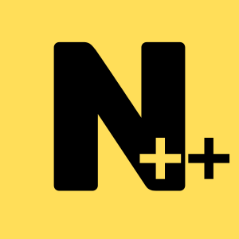

Install
Docs
Guides
Blog
Page under construction
nodepp quick reference card - Copyright (c) 2013-2025 Enmanuel Becerra (
@edbc
)
 nodepp quick reference card - Copyright (c) 2013-2025 Enmanuel Becerra
( @edbc )
nodepp quick reference card - Copyright (c) 2013-2025 Enmanuel Becerra
( @edbc )
nodepp quick reference card - Copyright (c) 2013-2025 Enmanuel Becerra
( @edbc )
nodepp quick reference card - Copyright (c) 2013-2025 Enmanuel Becerra
( @edbc )